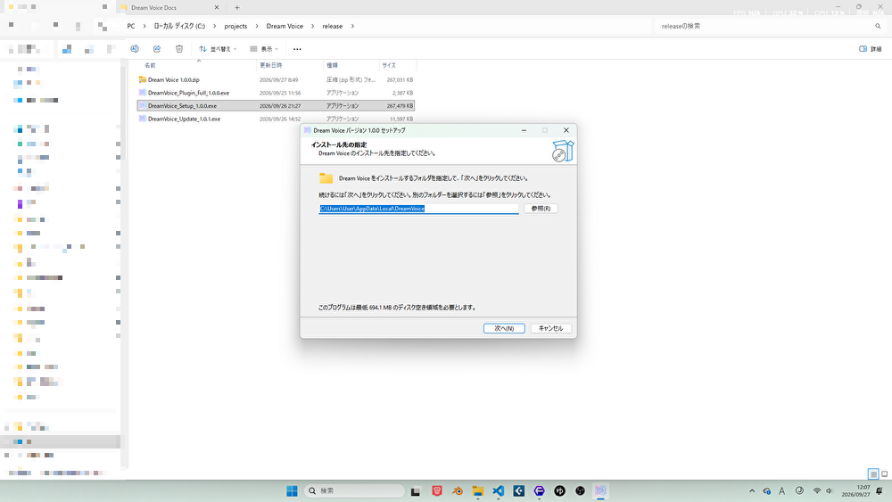
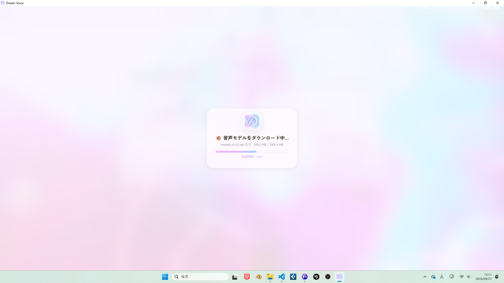
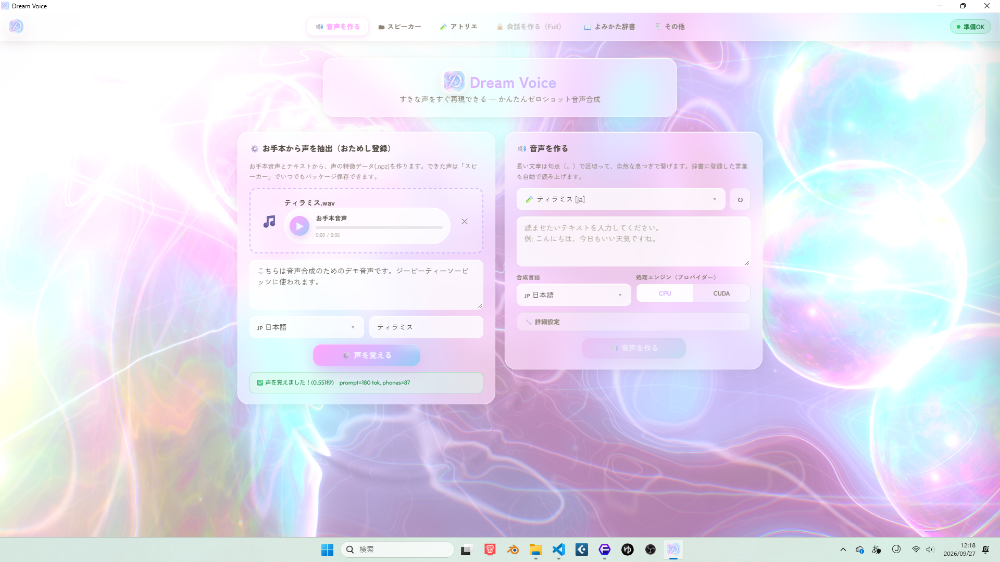
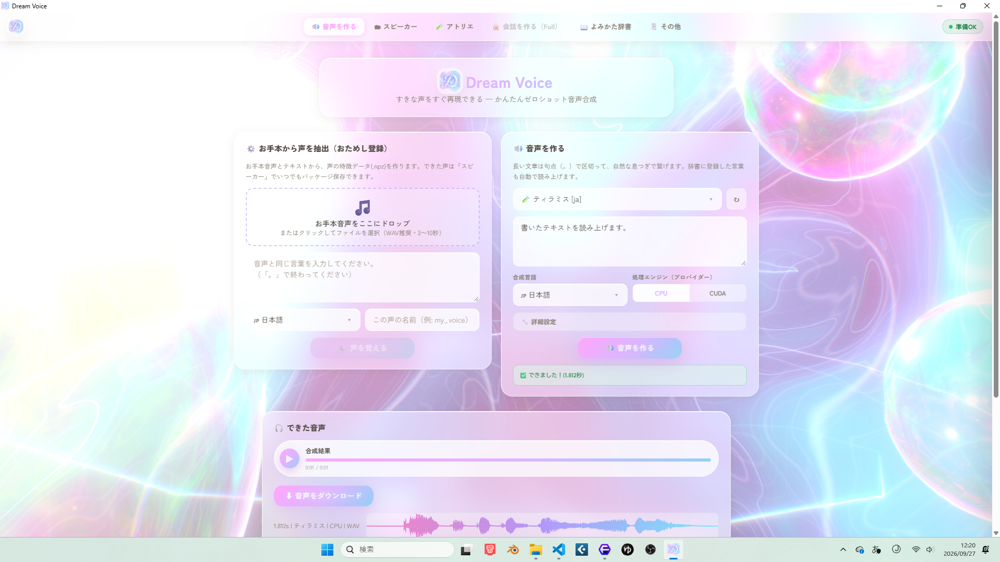
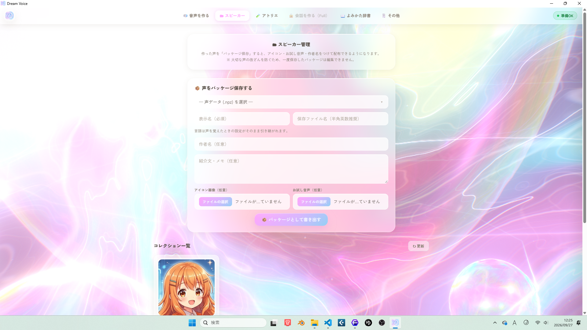
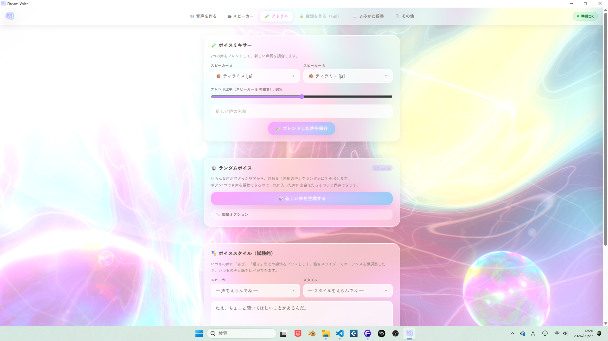
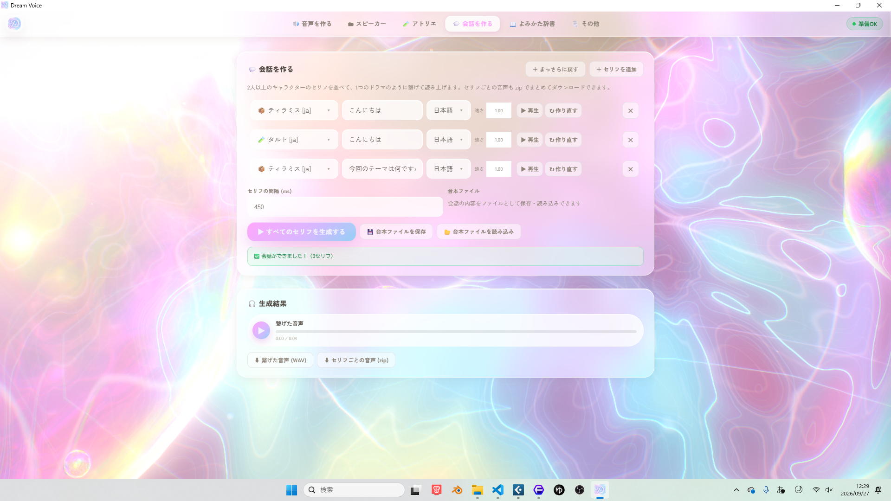
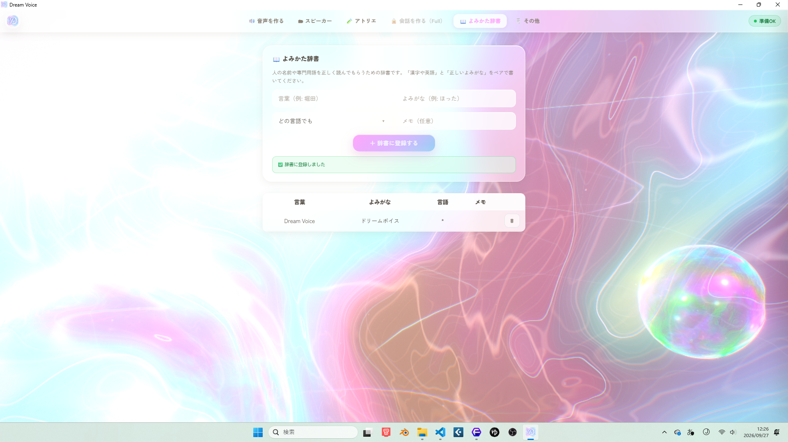
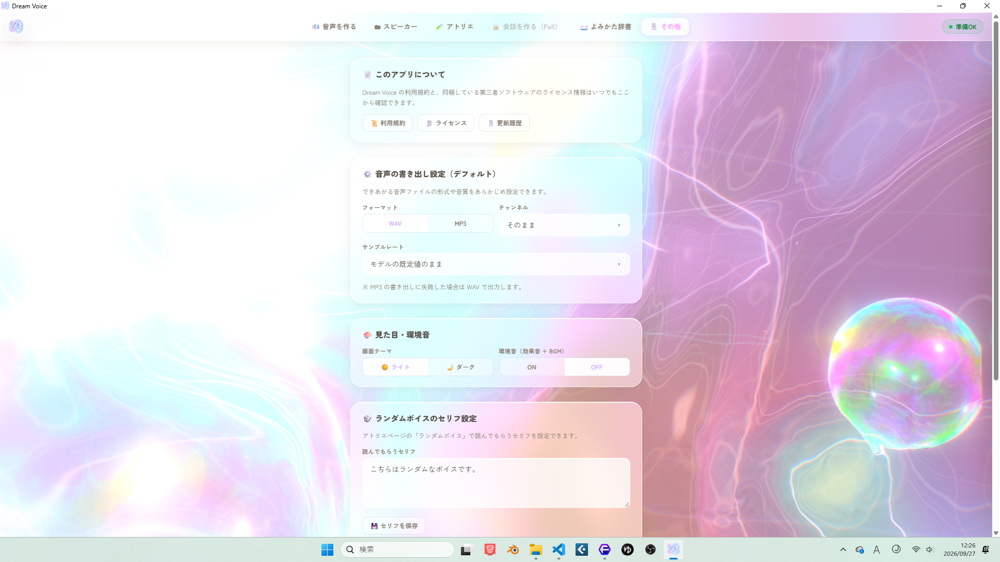

わずか3秒のお手本音声から声をクローンし、オフライン完結でテキストを自由に読み上げる。
Windows 向けボイス生成ソフトです。
Concept
好きな声のサンプルを少しだけ聞かせるだけで、その声で好きな文章をしゃべらせられる ― それが Dream Voice のコンセプトです。3〜10秒程度の音声サンプルと書き起こしテキストを与えるだけで、 その人の声の特徴を抽出（いわゆるゼロショット音声クローン）し、 抽出した声（＝「スピーカー」）を使って任意のテキストを読み上げた音声を生成できます。
Use cases
動画クリエイター・ゲーム開発者・ボイスドラマ制作者から、自分の声を配布・販売したい方まで、どなたでも簡単にご利用いただけます。
Overview
アプリの上部ナビゲーションは、次の6つに分かれています。詳しい使い方は「機能別詳細ガイド」で解説しています。
Free vs Full Plugin
Dream Voice は、声のクローン技術そのものは無料でしっかり体験できるうえで、より便利に・より本格的に使うための機能を「Full プラグイン」として追加導入できる構成になっています。
インストールから最初の声づくり・読み上げまでは「クイックスタート」でまとめて解説しています。
Quickstart
インストールから、最初の声づくり（スピーカー登録）・テキスト読み上げまでを一気に解説します。
動作確認済み環境
ZIP ファイルをダウンロードして解凍する
配布ページから ZIP ファイルをダウンロードし、任意の場所に解凍します。
セットアップファイルを実行する
DreamVoice_Setup で始まるファイルをダブルクリックして開きます。

インストール完了後、自動で起動する
インストールが完了すると、自動でアプリケーションが起動します。以降は Windows のスタートメニューからいつでも起動できます。
初回のみ「モデルのダウンロード」が実行される
完了すると自動でアプリが起動します。通信環境によっては 15 分程度かかる場合があります。ダウンロード中は、はじめに利用規約の確認画面が表示されます。最後までスクロールして内容をご確認のうえ「同意して始める」を押してください（ダウンロード自体はこの画面の裏で並行して進みます）。以降の起動では、この画面は表示されず完全にオフラインで動作します。

アプリが起動したら、まずは「🔊 音声を作る」タブの左側パネルで、お手本の声を登録してみましょう。
お手本音声をアップロードする
WAV 形式の音声ファイル（3〜10秒推奨）を、ドロップゾーンにドラッグ＆ドロップするか、クリックして選択します。
書き起こしテキストを入力する
アップロードした音声と一致する言葉を、テキスト欄に入力します。
言語と声の名前を指定して「声を覚える」を押す
日本語／英語／中国語／韓国語から言語を選び、わかりやすい名前を付けます（無料版では日本語のみ利用できます）。しばらく待つと、声の特徴データが作成されます。

声ができあがったら、右側の「音声を作る」パネルでさっそく読み上げてみましょう。
スピーカーを選ぶ
先ほど作成した声を、スピーカー選択欄から選びます。
読ませたいテキストを入力する
長い文章は句点（。）などで自動的に文単位に分割され、自然な間（ま）をとりながら結合されます。
処理エンジンを選んで生成する
CPU または CUDA（対応 GPU） を選択できます。GPU があればより高速に生成できます。生成された音声はその場で再生でき、WAV／MP3 など指定した形式でダウンロードできます。

スピーカーの管理・アトリエでの声の実験・会話を作る機能など、さらに詳しい使い方は「機能別詳細ガイド」をご覧ください。
Feature Guide
各タブの使い方を、詳しく解説します。
無料版では、生成できる音声は日本語のみ・約3秒までに制限されています。「Full」プラグインを追加で導入すると、この制限が解除され、英語・中国語・韓国語への対応、無制限の長さでの音声生成、後述の「会話を作る」機能、追加のボイススタイルなどが利用できるようになります。
.dvpkg 形式）して、アイコン画像・デモ音声・作者名・説明文つきの「話者パッケージ」として書き出すことができます。これは他の Dream Voice ユーザーに配布・共有できる自己完結型のファイルです。.dvpkg ファイルを読み込んで、自分のスピーカー一覧に追加することもできます。
2つの既存スピーカーを選び、混ぜる比率を指定して、両者の中間のような新しい声を作成できます。
あらかじめ学習された「声の空間」からランダムに声を1つサンプリングし、その場で試し読みできます。ボタン一つで気軽に未知の声と出会うことができ、気に入った声はそのままスピーカーとして保存できます。




FAQ
よくある質問と、困ったときの対処法をまとめています。
⚠️ このページは準備中です。ここに、実際によく寄せられる質問・トラブル事例を今後追加していきます。